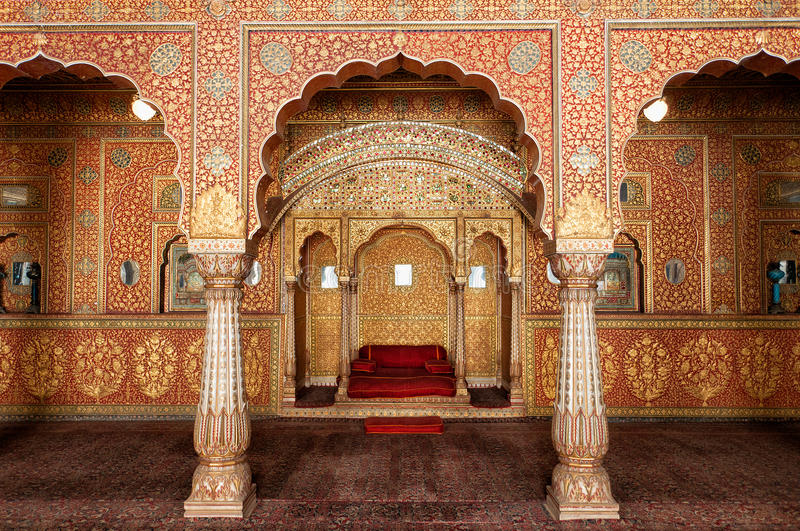
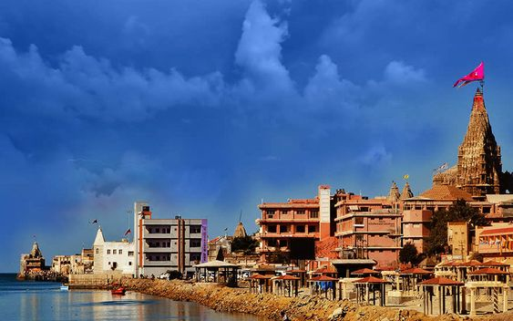
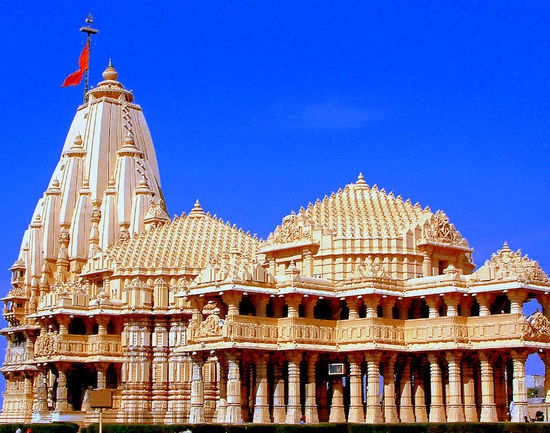

Ahmedabad

The History of Ahmedabad begins in the eleventh century with King
Karandev - 1, the Solanki Ruler. He waged a war against the Bhil King
Ashapall or Ashaval, and after his victory established a city called
Karnavati on the banks of the Sabarmati. The Solanki rule lasted until
the thirteenth century, when Gujarat came under the control of the
Vaghela dynasty of Dwarka. Gujarat was conquered by the Sultanate of
Delhi at the end of the thirteenth century.
Ahmedabad was built in an open and spacious plain in the immediate
vicinity of Ashaval to the east of Sabarmati. It then comprised of a
smaller area now known as the Bhadra Fort or the citadel of Bhadra. In
1487, Mahmud Begada, the grandson of Ahmed Shah, fortified the city
with an outer wall 10 km (6 miles) in circumference and consisting of
twelve gates, 189 bastions and over 6,000 battlements. The City was
planned according to the ancient Indo-Aryan tradition of a royal
capital with main roads, thoroughfares and subsidiary roads.

Jaipur
The history of Jaipur began when the Jaipur Kingdom was formed after
succeeding the vibrant and prosperous kingdom of Amber. The colourful
city was founded by Maharaja Jai Singh II, also known as Sawai Jai
Singh in 1727. No doubt that Jaipur is a well-designed city as its
founder was a famed mathematician and astronomer.
Vidyadhar Bhattacharya was a Brahmin Scholar from Bengal who aided
Sawai Jai Singh in laying out the city's architecture. Major places,
roads and squares took 4 years for their completion and each was
constructed keeping in mind the techniques of Vastu Shastra.
Bikaner

The Junagarh Fort of Bikaner is a magnificent structure around which
the city of Bikaner grew up. The fort was initially called Chintamani
and later renamed the Junagarh or Old fort in the 20th century. The
foundations of the Junagarh fort was built in 1478 by Rao Bika.
However, it existed just as a stone fort then. The present grand
structure was inaugurated on 17th February 1589.
The palaces inside the fort, the gardens, balconies, kiosks, etc.,
depict a composite architectural style influenced by the different
rulers' cultural differences and foreign inspirations. The unique
monuments on display in the fort represent 16 generations of rulers in
Bikaner starting from the late 16th century.

Dwarika
Dwarka on the western tip of the Kathiawar Peninsula is clubbed with
the holiest sites in India – the Char Dhams that include Badrinath,
Puri and Rameshwaram. It is believed that Lord Krishna arrived here
from Braj in Uttar Pradesh to build the city. The temple was
established by his grandson. It is at the cusp of the Gomti River and
the Arabian Sea, providing a scenic backdrop to the spiritual site. It
is said that Dwarka was submerged under the sea six times and what we
see now is its seventh avatar.
The temple itself has a fascinating legend. The original structure was
destroyed by Mahmud Begada in 1472, and subsequently rebuilt in the
15th-16th century. It was also feted by Adi Shankaracharya, the 8th
century Hindu theologian and philosopher.
Somnath

Somraj (the moon god) first built a temple in Somnath, made of gold;
this was rebuilt by Ravana in silver, by Krishna in wood and by
Bhimdev in stone. The current serene, symmetrical structure was built
to traditional designs on the original coastal site: it’s painted a
creamy colour and boasts a little fine sculpture. The large, black
Shiva lingam at its heart is one of the 12 most sacred Shiva shrines,
known as jyotirlinga. A description of the temple by Al-Biruni, an
Arab traveller, was so glowing that it prompted a visit in 1024 by a
most unwelcome tourist – the legendary looter Mahmud of Ghazni from
Afghanistan. At that time, the temple was so wealthy that it had 300
musicians, 500 dancing girls and even 300 barbers.
Mahmud of Ghazni took the town and temple after a two-day battle in
which it’s said 70,000 defenders died. Having stripped the temple of
its fabulous wealth, Mahmud destroyed it. So began a pattern of
destruction and rebuilding that continued forcenturies. The temple was
again razed in 1297, 1394 and finally in 1706 by Aurangzeb, the Mughal
ruler. After that, the temple wasn’t rebuilt until 1950.

Delhi
The earliest reference to a settlement in the Delhi area is found in
the Mahabharata, an epic narrative about two groups of warring
cousins, the Pandavas and the Kauravas, both descendants of the prince
Bharata. According to the narrative, a city called Indraprastha (“City
of the God Indra”), built about 1400 BCE, was the capital of the
Pandavas. Although nothing remains of Indraprastha, legend holds it to
have been a thriving city.
The first reference to the place-name Delhi seems to have been made in
the 1st century BCE, when Raja Dhilu built a city near the site of the
future Quṭb Mīnār tower (in present-day southwestern Delhi) and named
it for himself.